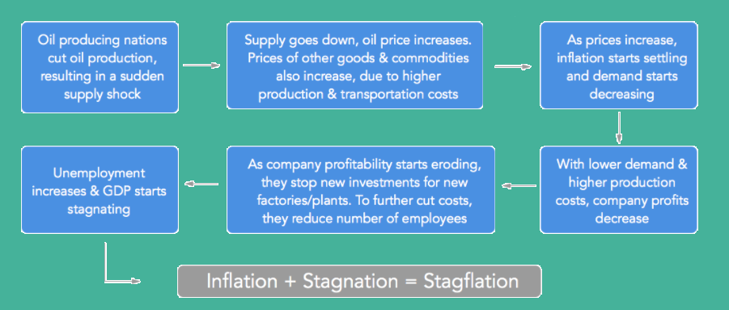
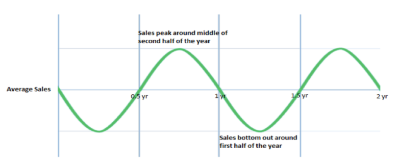
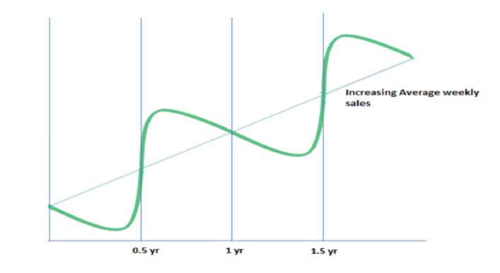

It's not just size, growth also matters
Gross Domestic Product (GDP) is the most common measure to estimate the size of a country’s
economy. It represents the total value of final goods and services produced domestically, in a
given time period. India’s GDP was approximately USD 2.3 trillion for financial year 2015. What this
means is that the total value of final goods and services produced inside the geographical
boundary of India between April 2014 and March 2015 was USD 2.3 trillion.
GDP calculation only includes value of final goods and services, as the value of intermediary
goods & services will automatically be included in the final price. For example, GDP doesn’t
include the value/price of a computer chip, as the same is included in price of a computer when it
is sold. When calculating GDP, all end goods and services manufactured within the country is
considered, regardless of the country of origin of the manufacturing company. So the value of a
Samsung mobile manufactured in India will be included in GDP, even though Samsung is a foreign
company.
GDP growth rate is the percentage change in GDP, compared to the previous financial year. It is
commonly used to see how many additional goods and services were produced, compared to the
previous year. It is also helpful in comparing two different economies. If GDP growth rate of India
is 7.5% and that of China is 7.0%, it means that Indian economy is expanding faster than China’s.
However, this does not tell us anything about the overall size of the economy – which is measured
by the absolute GDP number.
Let us consider a small example to understand this.
Suppose, last year, India’s GDP was USD 1000 and GDP of china was USD 10,000. This year, GDP
growth rate of India is 9% and that of China is 6%. This means, the value of additional goods and
services produced by India is USD 90 (9%*1,000) and that in China is USD 600 (6%*10,000). Thus,
we can say that India is expanding rapidly, but the absolute value of additional goods and
services, produced by India, is still less than China’s because of China’s higher base (previous
year’s GDP).
GDP per capita is defined as the total GDP divided by the total population. A higher GDP per
capita signifies a higher living standard, as more number of goods and services are available for
each individual within the country.
Investing in FDs thinking you will earn 8% returns?
From an individual investor’s perspective, inflation is one of the most important indicators to
understand and track. Inflation indicates an overall increase in the general price level of goods
and services in a country. When we read that last year inflation was 7%, it doesn’t mean that price
of every product like milk, cars, clothes, etc., increased by 7%. It means compared to the previous
year on average prices of all goods and services increased by 7%.
Each one of us would have definitely experienced the impact of inflation in our lives. In 90s, our
overall college education fees never used to be more than few thousand rupees, but now it’s
always in lakhs and crores. We know that since our childhood, prices of almost all goods and
services have jumped manyfold. Let’s take a basic example:
2005: You have Rs 100 and price of a cigarette is Rs 5. You can buy 20 cigarettes with Rs 100.
2015: You have the same Rs 100, but the price of a cigarette has increased from Rs 5 to Rs 12. Now
instead of 20, you can buy only 8 cigarettes.
This example clearly shows how inflation reduces value of money. Over a period of time, the same
amount of money will buy less units of the same good, thereby reducing the individual’s
purchasing power. Hence it is very important to invest one’s money and grow it.
Now that we know what inflation is, we need to understand what causes it. Inflation depends on
price, which is determined by demand and supply. So if people have more money leading to
more demand than supply, price increases. This is called demand pull inflation and is caused by
too much money chasing too few goods. On the other hand, if supply is less compared to
demand, again prices increase and cause inflation. This is called supply push inflation.
During the last decade, average annual inflation in India was around 8.4%. After tax average
annual rate of return on fixed deposits (assuming tax @ 20%) was around 6.2%. Thus, by investing
in FDs you were actually reducing the value of your money by approximately 2.2% every year,
instead of growing it. The rate of return on savings deposit account is always less than return on
fixed deposit (FD) and interest rate on bonds are comparable with returns on fixed deposits. So
after accounting for inflation, any individual who invested in savings account deposit, fixed
deposits or bonds actually lost money in the real sense. During the same decade, stock markets
generated an after-tax average annual return of 16%! Certainly makes sense to start investing in
equity and stop losing money investing in bonds and FD’s.
Inflation's nefarious cousin
You just learnt about inflation and how it is important to invest in instruments that earn higher rate
of return compared to inflation. Now let’s explore a similar sounding concept called stagflation.
Stagflation is a situation where economy is stagnating, i.e. it is not experiencing any GDP growth
and at the same time there is also high inflation. It is a nightmare situation for any country, as high
prices kill purchasing power and harm the poor, while low or negative GDP growth worsens the
situation by causing unemployment.
Now the basic question is how does a country get into such a mess? There could be many
reasons, but the concept of “supply shock” allows us to understand the causes of stagflation the
best. Suppose tomorrow all oil producing nations decide to cut supply and suddenly there is
shortage of oil everywhere. Obviously the price of oil will start increasing. Oil is the lifeblood of
any economy as it is used in various activities like transportation, power generation,
manufacturing of goods etc. Thus rising oil price will push up prices of all goods. Consider
oranges, to get farm produced oranges to a far off market, there is a huge transportation cost
involved which will increase with rising oil prices. Keeping this in mind, let’s look at the following
flow chart:

Unemployment is another closely watched indicator to decide the state of an economy. Read on
to understand what it means.
One of the most dreaded words in economics
Employment is the primary source of income for majority of the people. If less number of people
are employed, it results in less expenditure in the economy thereby leading to lower GDP growth.
This will be explained in detail in our article on measuring GDP. Generally high unemployment rate
signals recession and problems with the economy. Thus it is very important to observe and track
unemployment levels in an economy to determine its health.
Let’s try to understand this concept with an example. Suppose, there is a tiny island called
Wonderland. The total population of Wonderland is 30,000. Out of these 30,000 people, 5,000
are below the age of 16 which is the minimum working age on the island. So working age
population on the island is 25,000 (30,000 – 5,000). Labor force includes all the people who are
willing and able to work. So students, retirees, disabled people and homemakers won’t be
included in the labor force. Most of the people whom we just mentioned are the ones who are not
able to work due to various reasons, but labor force also excludes people who are not willing to
work. There might be few people who are very rich; too lazy to go out for work; or just tired of
searching for a job. These people are also not included in the labor force, as they are not willing or
actively seeking to work. Let’s again assume that amongst the working age population, 5000
people are either not able to work or are not willing to work. So the island’s labor force,
representing people who are able and willing to work, would be 20,000 (25,000-5,000). Now let’s
understand labor force participation rate:
In our example this would be 80% (=20,000/25,000*100). This represents the ratio of willing and
able to work people within working age population over total working age population. Labor
force consists of both – people who are employed and the ones who are not. A person is called
unemployed if he is able and willing to work, but does not have a job right now. Unemployment
rate is the percentage of people in labor force who do not have a jobs.
Let’s say, in wonderland 2,000 people do not have a job, but are able, willing and actively seeking
employment. Then unemployment rate would be 10% (=2,000/20,000*100). If after a year
unemployment rate goes down to 5% and nothing else changes, it means many jobs were created
last year due to which there are less number of unemployed people now. Jobs are created when
new factories and production plants are setup. Factories are setup to produce more goods and
services, and as we learnt in our first article, more goods and services translate to higher GDP.
Thus, a low unemployment rate generally represents a healthy economy and vice versa.
Now let’s see how these variables change with change in business cycles, as an economy
progresses.
Curves always matter
Let’s consider an example. Suppose you own a small chocolate factory in India. Most of the major
festivals – Diwali, Eid, Dussehra, Christmas etc. lie during the second half of the year. During this
festive season, lot of people buy your chocolate boxes to gift their loved ones. So every year, as
the second half approaches, your weekly sales start increasing with more and more people
buying chocolate boxes. Your weekly sales peak’s sometime in the middle of the second half of
the year and then again starts decreasing slowly, as the first half of the next year approaches. It
bottoms out during the middle of the first half of the next year and again starts increasing, as the
festive half of the year approaches. If you try and plot your weekly sales, it might look something
like the chart below. But this chart assumes that you are not growing and on an average, are
producing the same number of chocolate boxes every year.

Now suppose, your company is experiencing rapid growth and producing and selling more and
more chocolate boxes every year. You are opening new plants and rapidly expanding your
operations. So average number of chocolate boxes produced by your firm, in a year, keeps on
increasing with time, but you will still be facing same seasonal fluctuation in sales due to festivals.
Now in this case, if you plot your weekly sales, it will look something like the chart below.

You can easily extend this concept to the whole economy. In this case we will plot GDP, instead of
weekly sales. Now the time period might not be a fixed one, like one year in our example. It could
be several years, and cycles could be smaller or bigger. Actual GDP during a period could
fluctuate due to reasons like increased investments, reform oriented government, rising
consumer spending etc.
During expansionary phase – GDP growth increases, unemployment rate is low and inflation
increases. As explained in demand pull inflation, growth in GDP leads to higher income, resulting
in higher spending. Increased spending drives prices higher, hence higher inflation. While in the
case of contraction – GDP growth decreases (sometimes even becomes negative), unemployment
rate increases and inflation decreases. Generally, when an economy enters the contraction phase
and experiences two consecutive quarters of negative GDP growth, it is termed as recession.
The profit that you make on selling a long-term capital asset is called a long-term capital gain. But
as you know, inflation erodes the value of money. For instance, the value of Rs 100 was worth
more 10 yrs ago than what it is today. That is why when computing the gains on selling a capital
asset, it is important to adjust the purchase price to account for inflation.
This is done by way of indexation, a method used to reduce tax liability on selling a capital gain.
Indexation accounts for inflation from the year of purchase of an asset to the year of sale.
Capital asset: This is an asset that you hold for over a year with an intention to not to resell but
derive benefits from it for a longer period of time. These can be financial securities, real estate,
and so on in the form of short- or long-term assets. But for the purpose of indexation, we shall
focus on long-term capital assets—held for 12 to 36 months depending on the asset class.
Capital gain: The profit you earn on selling a capital asset after you have held it for a minimum
holding period is called a capital gain. So when you sell a residential property after holding it for
at least 3 yrs, the profit you make thereon is a long-term capital gain. Simply put, a capital gain is
a difference between the sale price and the purchase price of a capital asset. As with any other
taxable income, long-term capital gain also attracts income tax.
For instance, if you had bought a residential property for Rs 10 lakh in Mar 2003 and sold it for Rs
35 lakh in Mar 2020, then you have earned a capital gain of Rs 25 lakh. Here, the property is a
long-term capital asset and the profit is long-term capital gain, which attracts income tax.
Assuming the rate of tax on long-term capital gains is 10%, your tax liability on the sale of the
property would be Rs 2,50,000! But thanks to indexation, you don’t have to pay tax on Rs 25 lakh.
Here’s why.
As mentioned, indexation inflates the purchase price of an asset. Keeping the sale price of the
asset constant, a lower purchase price increases your capital gain and tax liability. On the
contrary, a higher purchase price decreases long-term capital gain and tax thereon. For this
purpose, you ascertain the indexed cost of acquisition. Meaning adjusting Rs 10 lakh for inflation
over 17 yrs of holding period so it reflects today’s value.
The rate of inflation considered here is derived from the government’s Cost Inflation Index (CII),
available on the income tax department’s website. Once you have the CII data, you can calculate
the indexed cost of acquisition of the asset or its inflation-adjusted value as follows:
Indexed cost of acquisition = Original cost of acquisition x (CII of the year of the sale/CII of year of
purchase)
In our example, the indexed cost of acquisition of the residential property = Rs 10 lakh x (280/105)
= Rs 26,66,667
Effectively, the capital gains will now be Rs 8,33,333 (Rs 35,00,000 minus Rs 26,66,667) as against
Rs 25 lakh before indexation. Naturally, your tax on capital gain also reduces to Rs 83,333
as against Rs 2,50,000 before indexation.
By now you may have understood the benefit of indexation. It helps reduce your long-term capital
gains and, in turn, brings down your overall taxable liability.